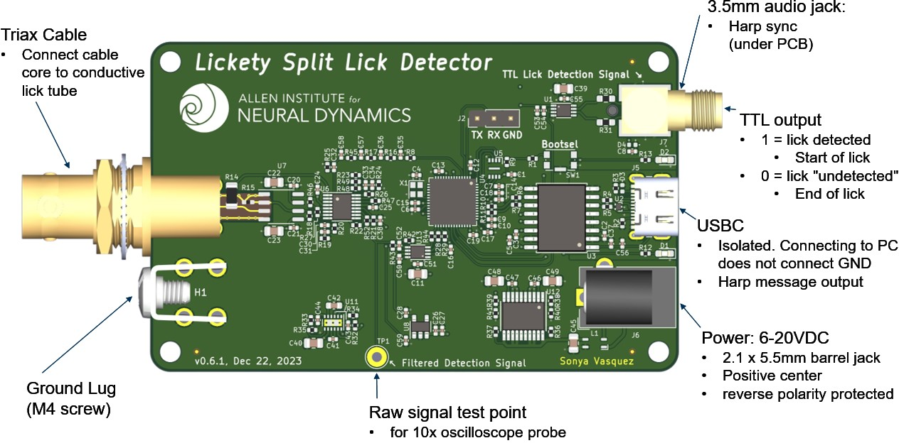
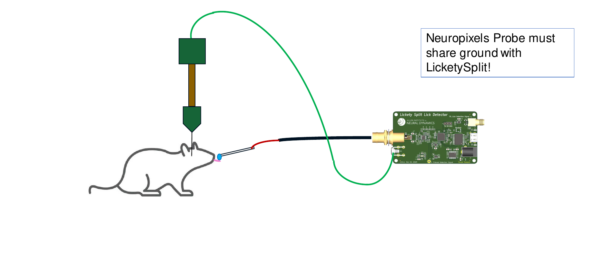
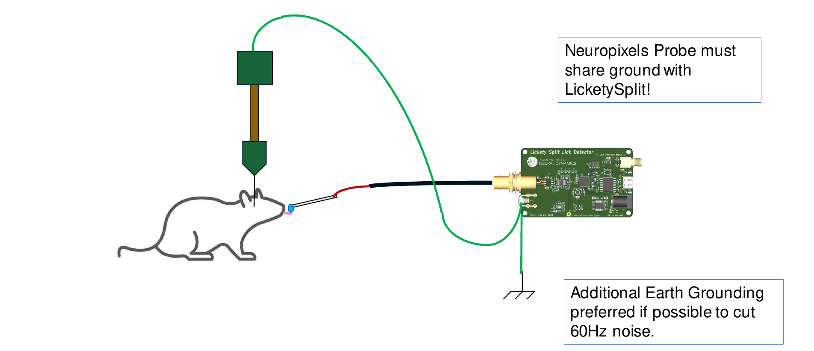
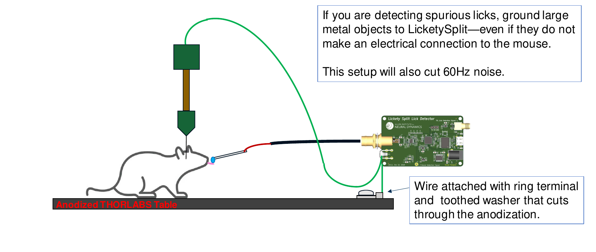

An ephys-compliant lick detector based on measured change in capacitance.
Features
- High Frequency (100 or 125 [KHz]), low current (200[nA]) excitation signal makes this device invisible to Neuropixel Probes used in electrophysiology recordings.
- Fast. < 1[ms] response time.
- Contact-based. Device triggers when mouse tongue contacts either the dispensing tube or dangling reward liquid.
- TTL output triggers when a lick is detected.
- Harp-protocol compliant (serial num: 0x0578). Also dispatches timestamped Harp messages when lick state change has changed.
- Fully supported in Bonsai with a dedicated Bonsai package
Extra Features
- 6-20VDC input (2.1 x 5.5mm barrel jack, positive center)
- reverse-polarity protected
- isolated USB to prevent ground loops with the PC.
- Two frequency options: 100 and 125[KHz] signal frequency to eliminate crosstalk between two closely-spaced lick tubes.
- Two amplitude options:
- The 0.02[Vpp] option with proper grounding is intended for Ephys recordings as it introduces negligible noise artifacts.
- The 2[Vpp] option can be used outside of an Ephys context without a ground connection
Device Pinout

Ephys Wiring Diagram
There are 3 configurations that will produce valid lick detection readings:
Option A works well if your rig does not have large sources of 60Hz noise.

Option B works well if your rig does have large sources of 60Hz noise.

Option C works well if your rig does have large sources of 60Hz noise, but you cannot earth ground it.

Cables
This system uses a Triax cable and will work with cable lengths up to .8 meters (2.5 ft) long. Triax cables can be purchased mostly-assembled from this eBay seller here and then modified slightly to connect to your lick port.
Warnings
Electrical Setup
It is critical that (1) both the device and mouse under test are grounded to a common ground and (2) the rig is earth-grounded (i.e: any exposed metal components are connected to earth ground). Otherwise, the device may introduce noise on the Neuropixel probes or produce spurious licks from outside electromagnetic interference.
Multiple-Lick-Detector Crosstalk
Multiple lick detectors can be used in the same setup provided that (1) they are grounded correctly (see Electrical Setup), (2) the lick tubes are electrically insulated relative to each other, and (3) the spacing between exposed lick tubes exceeds 4mm. If the spacing between exposed metal lick tubes is less than 4mm, then the antenna noise from one lick detector may affect the other. This phenomenon is called crosstalk, and it can appear in 2 ways.
- Lick signals that appear on one detector may show up on both detectors. The system is useable in this case, but the data may need to be cleaned up in post-processing where the shorter "simultaneously" detected lick is thrown out.
- The amplitudes of the two AC signals will constructively interfere with each other, causing the excitation signals to saturate to their maximum values. The system cannot be used to detect licks this way.
To fix this issue,
- Put each lick detector on a different frequency (100KHz and 125KHz).
- Space the lick detection tubes farther apart.
- Reduce the length of exposed metal on the lick tube.
Theory of Operation
This device detects a threshold change in capacitance. A 100KHz, 10mVpp AC sine wave is played on the tip of a conductive lick spout, (such as McMaster-Carr pn: 89875K271), and the amplitude of the returned waveform is measured every period.
A mouse sharing a ground with this device presents itself as a series resitive and capacitive load. When the mouse's tongue touches the metal tube (or water on the tip of the metal tube), the AC signal passes through the mouse to ground, lowering the amplitude of the returned sine wave below its trigger value, which triggers a lick to be detected. This detection signal is bandpassed in hardware (4th order Butterworth) and the resulting detection signal is lowpassed and compared against a threshold value in firmware to produce a lick/no-lick external trigger output. Overall propagation time through the entire signal chain is less than 1 millisecond.
The detection signal is AC such that repeated contact with the lick tube does not slowly charge the mouse.
Tuning Parameters
Warning: changing the values of these tuning parameters may produce a detection signal that exceeds the <1[ms] detection time guarantee. We suggest ensuring that your setup is electrically grounded correctly first before changing these values.
There are three parameters that can be adjusted related to tuning the lick detection sensitivity. While the starting values should be sufficient for almost all setups, it is (unlikely but) possible that these knobs may need to be adjusted for a particular setup. The four parameters are:
- "fast moving average" window size
- the last N raw signal amplitude values are averaged and sent to the consensus filter.
- This filter smooths out high frequency amplitude changes by averaging the last few values together.
- constraint: N must be a power of 2 (i.e: 2, 4, 8, 16, ...).
- "consensus" filter window size
- the last N values must all be below the lick-detection start threshold to trigger a detected lick.
- This filter increases the system's ability to reject intermittent (most likely inductive) noise sources that shrink the signal amplitude for a small period of time and may appear as a lick. Noise sources include fans, valves, and other lick detection tubes placed closer than 4mm apart.
- Increasing this value will improve the system's ability to reject outside inductive noise, but will slow down the detection time.
- constraint: N must be a power of 2.
- lick-detection "start" threshold
- a signal value below this threshold will trigger a detected lick (i.e: the output signal will be set to 5V.)
- constraint: "start" < "stop" threshold
- lick-detection "stop" threshold
- a signal value above threshold will untrigger a detected lick (i.e: the output signal will be set to 0V.)
- constraint: "start" < "stop" threshold
| LicketySplit | |
|---|---|
| whoAmI | 1400 |
| firmwareVersion | 0.0 |
| hardwareTargets | 0.5 |
Registers
| name | address | type | length | access | description | range | interfaceType |
|---|---|---|---|---|---|---|---|
| LickState | 32 | U8 | Event | Emits an event when the state of any lick detector changes. Value will be High when lick detected and Low otherwise. | LickChannels | ||
| Channel0TriggerThreshold | 33 | U8 | Write | Threshold value to detect the lick. Values below this threshold will be considered a detected lick. | |||
| Channel0UntriggerThreshold | 34 | U8 | Write | Threshold value to release the lick detection state. Values above this threshold will untrigger a detected lick. |